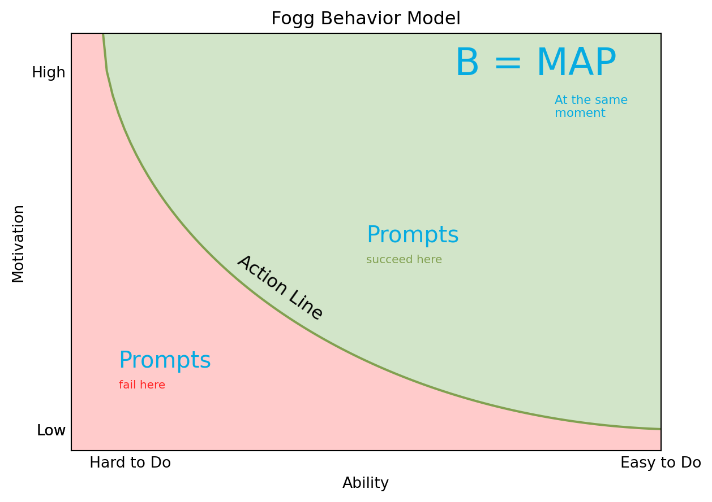

Code
import matplotlib.pyplot as plt
import numpy as np
text = { # text dict for easier translation
'ability':'Ability',
'motivation':'Motivation',
'title':'Fogg Behavior Model',
'bmap':'B = MAP',
'bmap_sub':'At the same\nmoment',
'ability_axis':('Hard to Do', 'Easy to Do'),
'motivation_axis':('High', 'Low'),
'action_line':'Action Line',
'prompts':'Prompts',
'prompts_succeed':'succeed here',
'prompts_fail':'fail here',
}
blue_color = '#06abe1'
green_color = '#81a050'
light_green_color = '#d2e5c9'
red_color = '#ff2222'
light_red_color = '#ffcbcb'
# Data for plotting
x = np.arange(0.0, 1.1, 0.01)
y = 1.05 - np.sqrt([np.max((xi, 0)) for xi in 1 - (x - 1.05) ** 2])
fig, ax = plt.subplots()
ax.plot(x, y, color=green_color)
ax.set(xlabel=text['ability'],
ylabel=text['motivation'],
title=text['title'])
ax.tick_params(axis='both', which='both',length=0)
ax.fill_between(x, y, color=light_red_color)
ax.fill_between(x, y, max(y), color=light_green_color)
ax.text(0.65, 0.9, text['bmap'], size=25, color=blue_color)
ax.text(0.82, 0.80, text['bmap_sub'], size=8, color=blue_color)
prompts_size=15
ax.text(0.5, 0.5, text['prompts'], size=prompts_size, color=blue_color)
ax.text(0.5, 0.45, text['prompts_succeed'], size=prompts_size*0.5, color=green_color)
ax.text(0.08, 0.2, text['prompts'], size=prompts_size, color=blue_color)
ax.text(0.08, 0.15, text['prompts_fail'], size=prompts_size*0.5, color=red_color)
# set x axis ticks names
xticks = [''] * len(x)
xticks[10], xticks[-10] = text['ability_axis']
plt.xticks(x, xticks)
# set y axis ticks names
yticks = [''] * len(y)
yticks[6], yticks[-1] = text['motivation_axis']
plt.yticks(y, yticks)
# set axis' limits
plt.xlim([0.0, 1.0])
plt.ylim([0.0, 1.0])
tp = np.array((0.28, 0.45))
trans_angle = plt.gca().transData.transform_angles(np.array((315,)),
tp.reshape((1, 2)))[0]
plt.text(tp[0], tp[1], text['action_line'], fontsize=12,
rotation=trans_angle, rotation_mode='anchor')
plt.show()